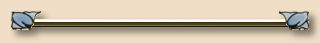

Lesson 6 asks us to create a top border. There are several ways to create a top border layout and this is one of them. The stylesheet for this page defines a top margin for the body that is tall enough to move the content down below my border image. Then the background for the body is defined to tile only in the horizontal direction. This is much easier than the way I first learned to make a top border. The first top border design I ever saw used a vertical version of the left border graphic. Instead of being too wide to tile, it was too long to tile. You can imagine how much fun that was to work with. (NOT!)
